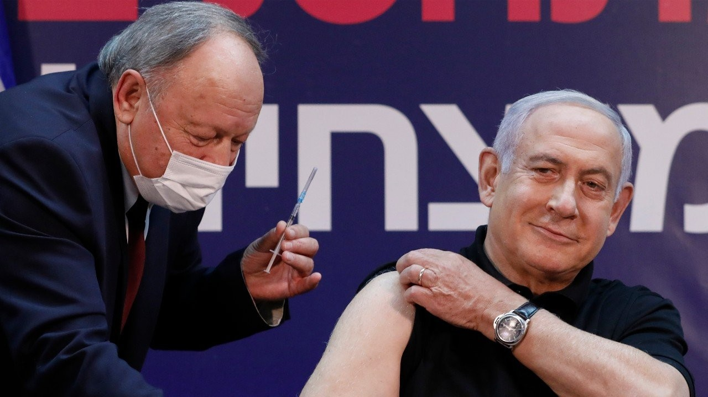
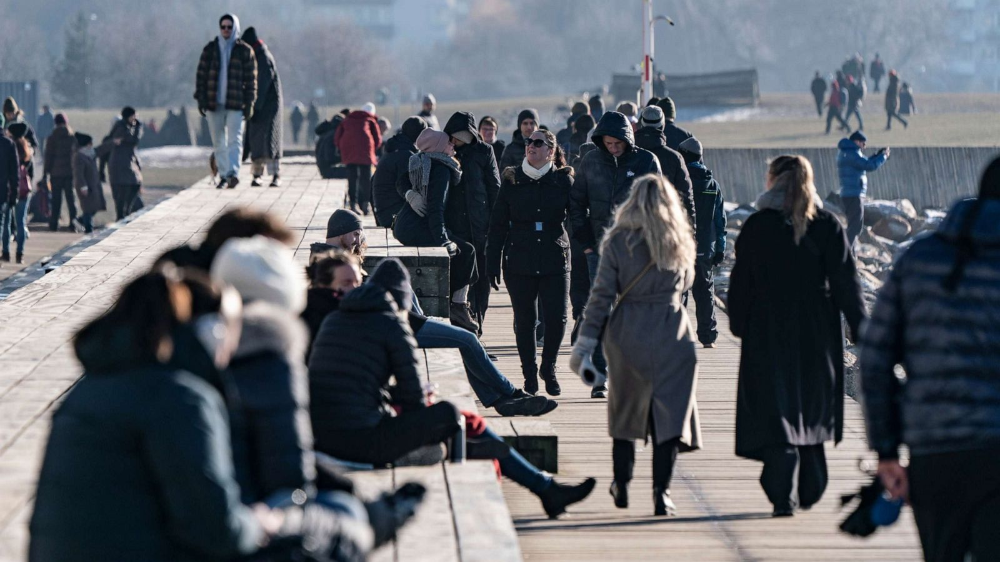

My Opinions on Our Country's Plans on Reimplementation
- Our country's plan on reimplementation isn't quite polished yet but we must not rush it. Rushing it will leave us in a state worse than Israel due to certain conditions in our country like a higher population. Even though Israel is one of the worst performers in initial f2f reimplementation, it is still a role model in vaccination since it is one of the first countries to reach herd immunity. In fact, the first picture shows Benjamin Netanyahu (Israel's former prime minister) as the first Israeli to be vaccinated on December 19, 2020.
- Once reimplementation begins, we must implement strict safety protocols like Uruguay and Japan. Doing the opposite will make us like Israel who's lax policies ended up ruining them. If the Filipino students on the second picture can follow decently strict safety protocols, every Filipino student can also do the same.
- Even if f2f classes returns, we must still impose strict lockdown measures. As a matter of fact, this "no lockdown" strategy only "worked" for Sweden because of their small population density. If the Philippines (which has a high population density) decides to adopt this, we'll be in great danger. Take a look at the third photo and you'll see Swedes not wearing masks as if the pandemic doesn't even exist.
- Both Japan and Uruguay have strict government protocols but Japan's populace is still hesitant about the otherwise efficient safety protocols so Filipinos must look up to Uruguayans since their obedience in following government safety and f2f protocols ensured a smoother and safer return of f2f classes.



- Pilot testing (and initial f2f classes) should have been conducted on highschool students and college students first because they have a lower risk of contracting the virus when compared to elementary and kinder students. Another advantage is the fact that they could easily join the workforce particularly the senior highschool and sollege students.
- We should have two months of pilot testing instead of one. More specifically, we must have the first two months of pilot testing for higher grade levels and the latter two for the lower grade levels. This is the case due to the fact that lower grade levels should have a pilot testing dedicated to them since most (if not, all) students from lower grade levels aren't vaccinated since vaccine roll-outs for their age group aren't (if not, barely) available yet.
- Carrying out more vaccination campaigns should be a priority to further protect the masses from Covid-19. Forcibly vaccinating every Filipino is a violation of personal freedom but we must at least convince them to get a vaccine via vaccination campaigns.
- Instead of having the typical two-month summer vacation in 2023 and 2024, we must have make-up classes on the subjects of S.Y. 2020-2021 and S.Y. 2021-2022 because students barely learned anything in the online set-up.